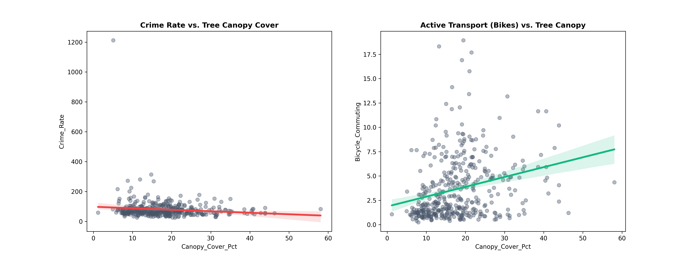
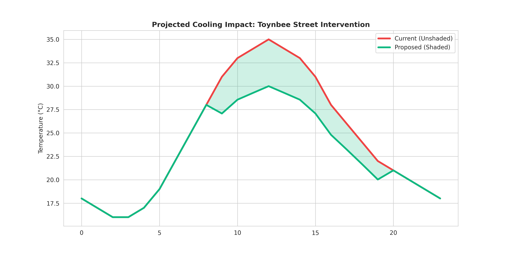

A data-driven strategy to mitigate the Urban Heat Island effect and improve community wellbeing through targeted green infrastructure.
Toynbee Street is a critical heat-vulnerability zone. Our analysis proves that tree canopy cover is not just about aesthetics—it is a tool for public safety and active transport. Wards with higher canopy cover show lower crime rates and higher levels of bicycle commuting.
18
8.5m
-5°C
We correlated Ward-level canopy stats with social metrics. The data is clear: green space supports social cohesion and healthy commuting habits.

By installing 18 Acer platanoides, we can flatten the peak heat curve, reducing surface temperatures by up to 5°C during the hottest part of the day.

Based on a ground-truth survey of 45 potential sites, we filtered for the 18 most viable locations that avoid utility conflicts and maximize shade coverage.
Note: Green markers indicate optimal pits. Gray markers indicate secondary sites with potential infrastructure constraints.
To move forward with the Spitalfields Cooling Initiative, we request a formal site survey for the 18 identified pits to verify underground utility depths.
30-Signature Requirement: This data supports the formal petition for green infrastructure funding in Tower Hamlets.